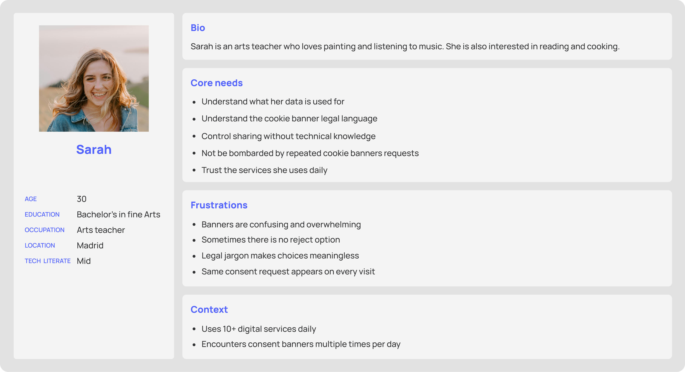
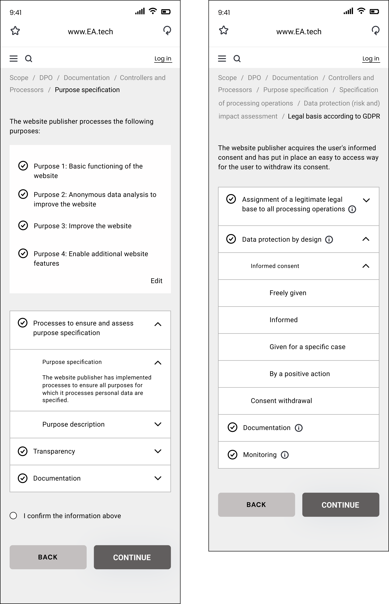

✦
Product
A browser extension & privacy panels
Designing a legally compliant, human-centred consent management system, a Customer Panel and an Auditing Panel (B2B), balancing strict EU data protection law with intuitive privacy controls.

A browser extension & privacy panels
one year
UX Researcher & UX Designer
User Research, Survey, Usability test, Product Tracking, UX Design
Figma, Notion, SoSci Survey, Prolific, Grafana
Team Project at L&I Technology GmbH
At Law & Innovation Technology GmbH (L&I), Berlin, I collaborated in the development of a consent agent, a browser extension that allows consumers to manage and transmit their consent decisions to digital services, helping them understand the benefits and risks of data sharing, validated with over 1,000 users across EU member states. I also designed a Customer Panel and an Auditing Panel for website publishers to configure and verify their GDPR compliance.
My role was within the empathize, define and test phases of the design thinking process. I conducted user research after which the Consentor was designed based on the research team findings, I tested and tracked it while was using by the real users across EU for the first time.
Internet users need clear and manageable ways to understand and control their data consent decisions, because complex cookie banners, legal language, and inconsistent interfaces cause confusion, consent fatigue, and a loss of trust in digital services.
EU internet user:
“I have to accept the cookies to use the website, I just click accept all. I don't understand what I'm actually agreeing to.”
The biggest operational challenge was tracking interactions for 1,000+ EU testers. I solved this by filtering tester IDs in SoSci Survey and Grafana dashboard based on certain dates, identifying users who had stopped interacting mid-flow, then contacting those specific users on Prolific to collect bug reports directly talking to them, sharing findings with developers in Notion in real time.

Users encounter cookie banners several times per day and have developed a habit of dismissing them without reading, defeating the purpose of consent.
GDPR-required terminology (e.g. legitimate interest) is incomprehensible to the average user, making consent meaningless in practice.
Many existing implementations deliberately hide "Reject" option or pre-select "Accept". Users don't realise their choices are being manipulated.
Users must re-consent across every website separately. There is no single place to manage or review all consent decisions.
Users cannot see which third parties their data has been shared with, or what specifically has been collected under their consent.
This is part of Consentor designed based on the research findings.
Finding: Participants did not notice the "Manage preferences" option because it was styled as a plain text link sitting between two prominent buttons. Most went straight to "Accept" or “Reject” without realising a customisation option existed.
Fix: Flagged to the design team to give "Manage preferences" a bordered button style with equal visual weight to the other two options. In retesting, the rate of users actively opening preferences more than doubled.
Finding: Users who reached the granular settings screen felt overwhelmed and abandoned the flow. The screen presented all cookie categories simultaneously with technical descriptions, creating cognitive overload.
Fix: Reported the drop-off data. The design team restructured the screen to show one category at a time with a plain-language description. Drop-off at that step decreased significantly in the next testing round.
Finding: Some users did not understand that their consent choices could be changed after submission, preferring to click "Reject" and move on rather than risk making a permanent mistake.
Fix: Recommended adding a persistent "Change your preferences" link accessible from every page after consent was given. Once added and retested, participant anxiety around making the "wrong" choice dropped noticeably and consent flow completion improved.
For Cookie banner customer panel & Auditing panel as legally regulated compliance tools, traditional user research answers only half the question. Before I could understand what publishers need, I had to understand what GDPR requires, because those requirements shaped every field, every flow, and every decision in both panels.
I went through GDPR articles, mapping each legal obligation to a design requirement. What must a publisher disclose? What options can they have? What is legally mandatory vs. optional?
Understanding technical constraints early: which GDPR checks could be automated by scanning a website, and which required manual publisher input.
Studied EU guidance documents, real compliance case studies, and existing tools to understand the problem landscape beyond just the legal text.
Since any interaction patterns were predefined by regulation, my UX work had to find clarity and trust within those boundaries, not around them.
I designed the complete user flows for both panels on FigJam, mapping each step against GDPR requirements and validating with the legal team before any visual design began.
This is part of the Auditing Panel wireframes which I designed on Figma for both app & web (I am just allowed to show a couple of screens of wireframes):

Finding: The audit felt like a black box, meaning that publishers didn't know what would be checked.
Fix: Added a full upfront checklist of all audit criteria before starting the process.
Finding: Audit failures didn't explain how to fix issues.
Fix: Every failure now links directly to the relevant Customer Panel setting with a plain-language fix instruction.
Finding: Publishers wanted to share their certificate but didn't know how.
Fix: Added one-click embed code and a downloadable badge image.
Open to meaningful UX/UI Design, UX research, Product Design, and human-centered AI experience work.